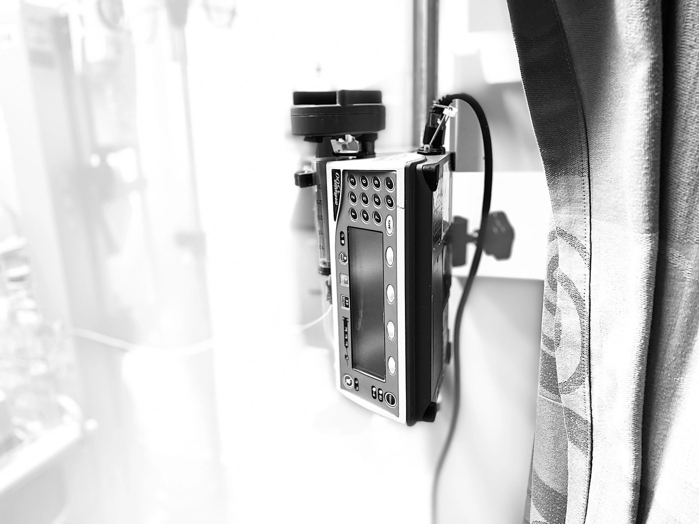

Maternal milk
Frequently asked questions
Why is my breastmilk best?
The milk you provide is something only you can give your premature baby. Your breastmilk contains invaluable nutrients and immune factors that help your baby grow and develop well. Your milk also helps protect your baby while his/her immune system is still developing. Premature babies get extra benefits from mom’s breastmilk including decreasing their risk for a serious infection in the intestines called necrotizing enterocolitis (NEC).
How do I make and provide breastmilk to my baby?
Breastfeeding is different when you have a premature baby. Premature babies are not strong enough to feed at the breast so they receive expressed breastmilk instead. Breastmilk is expressed with the help of a breast pump. We highly recommend beginning hand expression as soon after birth as you are able. Your bedside nurse will help you get started pumping within the first 6 hours after birth. Frequent pumping (8-12 times per day, with at least one pumping session overnight) will mimic the frequency of a newborn’s feeding pattern and promote a good milk supply.
Where do I get a breast pump?
There will be a pump at your baby’s bedside for you to use in the hospital. If you do not have a pump at home yet, your lactation consultant will give you information on how to get a pump at little or no cost to you. You will need a breast pump at home by the time you are discharged from the hospital.
How can I learn more about breastfeeding, how to store my milk, and what to do if I have a problem?
A lactation consultant will automatically meet you after your baby is born to help guide and support you through your breastfeeding and pumping journey. The lactation consultant will provide you with a larger packet that has information about the benefits of breastfeeding, increasing your milk volume, using a breast pump, hand expression, and storing your milk. The lactation consultant will also be able to answer your questions about breast-feeding and pumping.
Donor Human Milk

What is donor human milk?
Pasteurized donor human milk is breast milk which has been donated to a milk bank. Upon donation, it is screened, pooled, and tested so that it can be dispensed to hospitals for use by infants in need. All donor mothers require screening and approval, and all donor milk is logged and monitored. Pasteurization eliminates harmful bacteria or other potential infecting organisms. A small amount of nutritional elements are lost in the process, however donor milk has been determined to be the second best choice after mothers’ own milk.
In the absence of maternal milk, donor milk offers many of the benefits of human milk for premature infants, including:
- Infection-fighting factors
- Reduced incidence of necrotizing enterocolitis, a severe inflammatory bowel condition in premature infants
- Active growth and developmental hormones
- Improved digestion
- Ideal nutrition
Donor milk is usually provided (when available) until mother’s milk volume becomes sufficient or until a premature baby reaches 32 weeks adjusted gestational age. At that point, premature infants are weaned to the appropriate infant formula in the absence of mother’s milk.